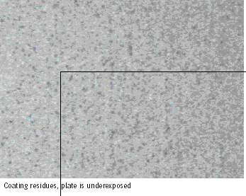
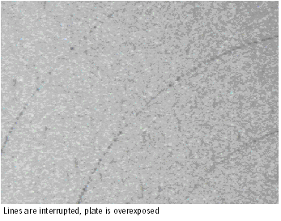

The power values and if necessary the drum speeds will be determined here.
The following values are set in the "Power Test" tab:
Power range: is suggested by the Material Wizard and should cover the entire adjustable power range of the modules if possible.
|
|
Start the power test by clicking the "Start power test" button. |
Determine the power value for known printing plates as follows:
Visually evaluate the "Power alignment scale" patch. Mark the scale value specified in "Power Test Match Field" in the material release list for a released plate.
Now mark for each module the test strip where the inner diamond visually merges with the background for the marked scale patch. When no test strip meeting this criterion is found, you must adapt the drum speed and repeat the test.

Enter the number of the defined test strip in boxes "A - F" in the "Power Test Evaluation" tab and click "Apply". The power data are sent to the imagesetter.
To evaluate the test for unknown plates, greatly varying development conditions or missing data in the "Power Test Match Field", proceed as follows:
Test strip evaluation occurs according to two criteria per module:




You should select the working point so that you have as optimal a resolution as possible while avoiding hairlines at the same time.
The main criterion is the absence of hairlines. This means that you should aim for a safety margin of at least 20% less power than that at which coating residues or hairlines can just about be seen.
Enter the number of the strip with the highest power value in all of the boxes "A - F" in the "Power Test Evaluation" tab and click "Apply". The power data are sent to the imagesetter.
Test strips determined as having the highest power values of the modules:
A = 9; B = 10; C = 9; D = 8; E = 9; F = 9
In this example, type '10' into boxes "A - F" in the "Power Test Evaluation" tab.
To evaluate the test for unknown negative plates, greatly varying development conditions or missing data in the "Power Test Match Field", proceed as follows:
Use a reflection densitometer to measure the absolute density values of the solid patches per module on every power test strip and record them in a graph in relation to the power.

Determine the power where the solid density of each module is the highest. The power working point is 10% above this value (to compensate for process variations). In the above example you would have to set the power to 72 mW.
Type the power of the module number featuring the highest determined power value in the "Current power" box in the "Power Test Evaluation" tab.
Determined power values of modules:
The module with the highest power value is module B with a value of 8, equaling a power of 72 mW.
Enter the number of the test strip with the highest power value in boxes "A - F" in the "Power Test Evaluation" tab and click "Apply". The power data are sent to the imagesetter.
The working points specified in the material release list are mandatory for chemical-free plates; a detailed work instruction for each separate plate would go beyond the scope of the present document.
At this point you must launch the System Wizard in order to optimize the geometric module alignment when commissioning a Suprasetter or following the installation of laser modules.
Copyright © 2016 Heidelberger Druckmaschinen AG